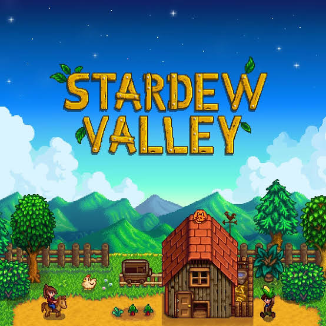
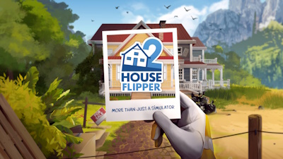

Stardew Valley is a charming and relaxing farming game with plenty to do. From growing crops and raising animals to fishing, mining, and building relationships with townspeople, the game offers a satisfying mix of activities. Its pixel-art style and peaceful music create a cozy atmosphere, making it easy to spend hours playing. Overall, Stardew Valley is a fun and heartwarming game that appeals to both casual and dedicated players.

House Flipper 2 is a relaxing and satisfying home renovation game that improves on the original with better graphics, smoother controls, and more creative building options. Cleaning, painting, decorating, and renovating homes feels surprisingly rewarding, especially when you can see a messy space transform into something beautiful. The gameplay can become repetitive at times, but the chill pace and creative freedom make it easy to lose hours playing. Overall, its a great choice for anyone who enjoys simulation, decorating, and satisfying before-and-after transformations.